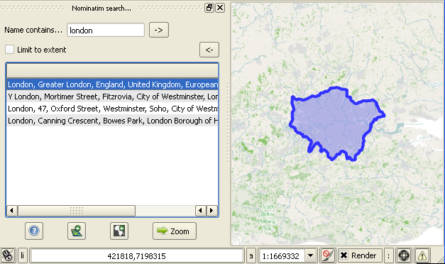

OSM place search OSM place search
OSM place search OSM place searchFacilitate location by looking for places (cities, hydrography ...), based on Nominatim , exposed by Open Street Map
Specific API options for "Nominatim" service can be set as "option1=value option2=value"
Thus, a limitation of the research in a given bounding box is configured by specifying (for example) the viewbox parameter : "viewbox=-1.85,46.35,3.90,42.50"
The other options are described online ici

Activate the panel,
Then enter the beginning of the name of the location. Confirm.
The search can be limited to the current map extent.
Selecting an item shows the corresponding geometry on the map.
Double-click the item (or zoom button) moves to the place.
You can also create a layer (or enrich the layers 'OSM polygon', 'line' or 'point' depending on the configuration) from the selected object, a mask layer when element is a polygon